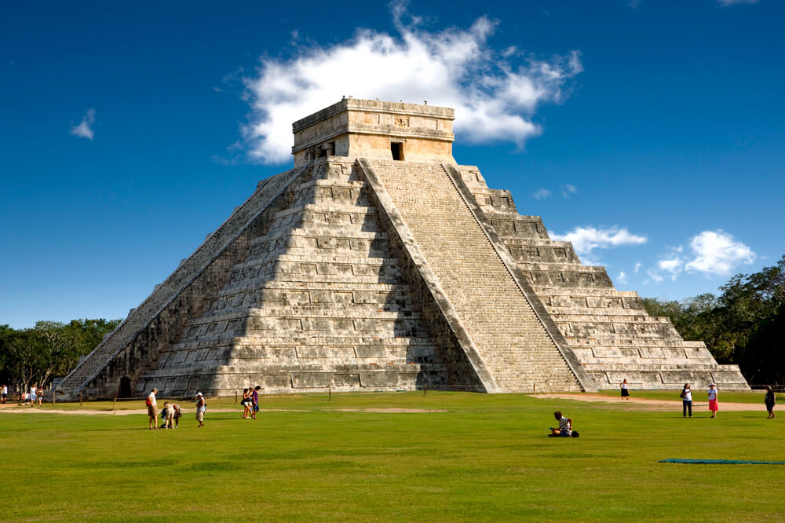
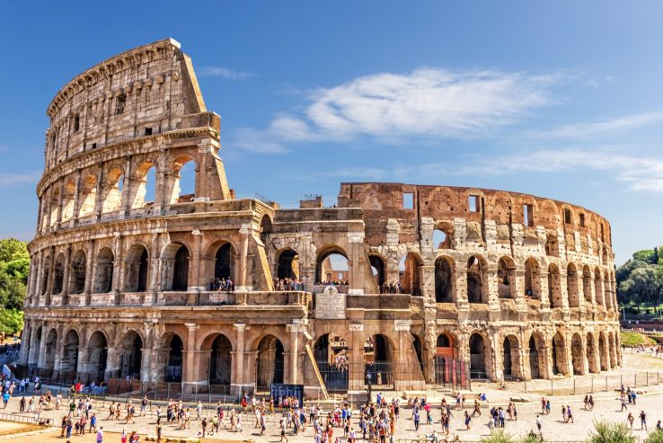
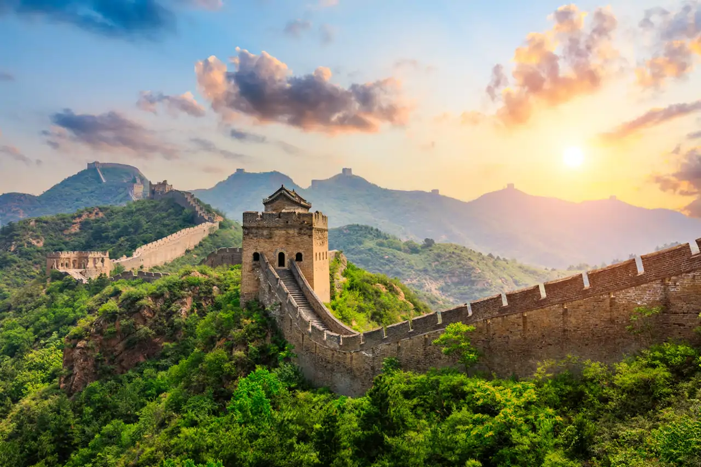
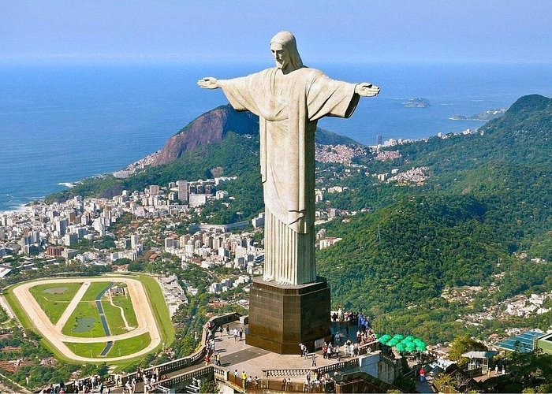
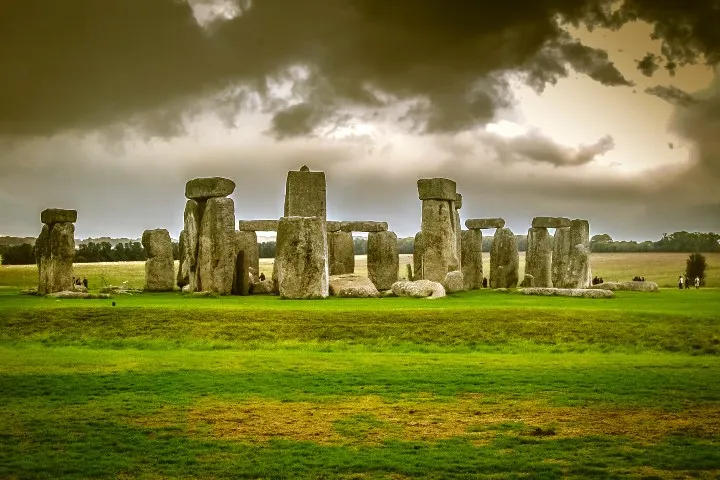

I. Las 7 Maravillas del Mundo

1. Chichén Itzá (México)
Esta ciudad maya es mundialmente famosa por la pirámide de Kukulcán, la cual destaca por su precisión astronómica, donde la luz del sol crea el efecto de una serpiente bajando por sus escalones durante los equinoccios. Desde que fue nombrada una de las nuevas siete maravillas en el año 2007, el flujo de visitantes internacionales ha crecido de forma constante, consolidándose como la zona arqueológica más visitada de todo México con más de 2.5 millones de turistas anualmente.
A lo largo de los años, este destino no solo ha mantenido su valor histórico, sino que ha generado un impacto económico multimillonario para la región de Yucatán. A pesar del paso del tiempo y los fenómenos climáticos, sus estructuras se conservan en un estado impresionante, permitiendo que viajeros de todo el mundo sigan admirando de cerca el avanzado legado científico y cultural de la civilización maya.

2. El Coliseo Romano (Italia)
El gran anfiteatro ubicado en el centro de Roma fue construido en el siglo I y servía como el escenario principal de combates de gladiadores y espectáculos públicos, simbolizando el máximo poder del Imperio Romano. En la actualidad, este monumento es un gigante del turismo europeo que alcanza picos de hasta 7 millones de visitantes por año, convirtiéndose en el motor cultural y el icono más rentable de toda Italia.
Históricamente, el Coliseo ha sobrevivido a grandes terremotos y al expolio de materiales, pero gracias a inversiones de decenas de millones de euros en su restauración, hoy luce más majestuoso que nunca. Es una parada obligatoria e imprescindible para cualquier viajero, ya que ofrece una ventana única a la ingeniería antigua y a la historia de una civilización que marcó el rumbo del mundo occidental.

3. Machu Picchu (Perú)
Esta antigua ciudadela inca situada en los Andes Peruanos es una obra maestra de la ingeniería y la arquitectura que parece flotar entre las nubes. Desde su redescubrimiento científico en 1911, se ha convertido en el destino más emblemático de Sudamérica, atrayendo a más de 1.5 millones de turistas anuales que buscan conectar con la energía espiritual del Imperio Inca.
A lo largo de los siglos, el sitio ha resistido el paso del tiempo gracias a su avanzado sistema de drenaje y terrazas agrícolas que evitan la erosión de la montaña. Visitar este lugar es una experiencia inolvidable e imprescindible, ya que ofrece una panorámica espectacular de la cordillera y un testimonio vivo de una civilización que dominó las alturas con una precisión asombrosa.

4. La Gran Muralla (China)
Esta colosal estructura de piedra y ladrillo serpentea a través de desiertos y montañas, habiendo sido construida originalmente para proteger la frontera norte del Imperio Chino. Con una extensión de miles de kilómetros, representa la resistencia y el poder de las antiguas dinastías, siendo hoy un fenómeno turístico que recibe a decenas de millones de visitantes que caminan por sus históricas almenas.
Históricamente, la muralla ha servido no solo como defensa, sino como una ruta de transporte y comunicación vital para la antigua Ruta de la Seda. Es considerada una parada obligatoria para entender la magnitud de la mano de obra humana y la visión estratégica de una cultura que logró levantar la construcción más larga del mundo occidental y oriental por igual.

5. Petra (Jordania)
Conocida como la "Ciudad Rosa", este enclave arqueológico fue excavado directamente en los acantilados de arenisca por los nabateos hace más de dos milenios. Su monumento más famoso, El Tesoro, simboliza la riqueza de una capital que controlaba las rutas comerciales, atrayendo hoy a más de un millón de personas anuales que se maravillan con sus fachadas talladas a mano alzada.
El sitio ha sobrevivido a siglos de abandono y al efecto de las tormentas de arena, recuperando su esplendor gracias a los esfuerzos internacionales de conservación en Jordania. Recorrer el estrecho cañón del Siq es una aventura única e imprescindible para apreciar cómo la naturaleza y el arte humano se fusionaron para crear una de las ciudades más bellas de la antigüedad.

6. El Taj Mahal (India)
Este majestuoso mausoleo de mármol ubicado en la ciudad de Agra fue erigido por orden del emperador Shah Jahan como el monumento al amor definitivo. Es el icono más representativo de la India, destacando por su simetría perfecta y una decoración que incluye piedras preciosas incrustadas, recibiendo la visita de unos 8 millones de turistas de todo el mundo cada año.
A lo largo de los años, el edificio ha requerido cuidados intensivos para proteger su blancura característica de la contaminación ambiental y el paso del tiempo. Contemplar su reflejo en los canales de agua es un momento mágico y obligatorio, ya que representa la cúspide de la arquitectura mogola y una historia de devoción que ha conmovido a la humanidad entera.

7. El Cristo Redentor (Brasil)
Esta imponente estatua de estilo Art Déco se alza sobre el cerro del Corcovado, abrazando simbólicamente a la ciudad de Río de Janeiro con sus brazos abiertos. Con 30 metros de altura, es el símbolo máximo de la fe y la hospitalidad brasileña, convirtiéndose en un punto de referencia que atrae a cerca de 2 millones de visitantes que suben a la cima para disfrutar de la mejor vista de Brasil.
Desde su inauguración en 1931, el monumento ha sido restaurado para resistir las fuertes descargas eléctricas y vientos que azotan la bahía. Es una parada obligatoria e imprescindible para cualquier turista, ya que ofrece una perspectiva inigualable de la geografía carioca y el espíritu vibrante de una nación que celebra su patrimonio cultural.
Para conocer más sobre estas maravillas, visita la página oficial de las 7 Maravillas.
II. Otros Destinos Turisticos
| Destino | Descripción | Ubicación | |
|---|---|---|---|
| Isla de Pascua, Chile |

|
El monumento ceremonial más grande de la Polinesia, con 15 moais que preservan la energía de sus ancestros y ofrecen una de las mejores vistas de la salida del sol en la isla. |
|
| Caño Cristales, Colombia |

|
Conocido como el "río de los cinco colores", este río exhibe tonos vibrantes de amarillo, verde, rojo, azul y negro, creando una explosión de colores única en el mundo. |
|
| Parque Hitsujiyama, Japón |

|
Un mar de flores rosa (shibazakura) que cubre las colinas, con vistas espectaculares al Monte Fuji, ideal para quienes buscan experiencias exóticas y naturales. |

|
| Pozo de Darvaza, Turkmenistán |

|
Conocido como las "Puertas del Infierno", este cráter de gas en llamas ha ardido desde 1971 y es una de las maravillas naturales más insólitas del mundo. |
|
| Stonehenge, Reino Unido |
 |
Un misterioso círculo de piedras de 5.000 años de antigüedad, cuya función exacta sigue siendo un enigma, pero que despierta una energía mística en quienes lo visitan. |

|